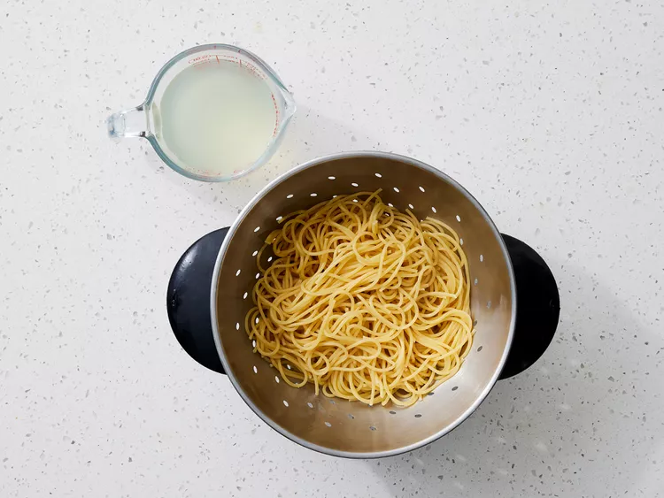
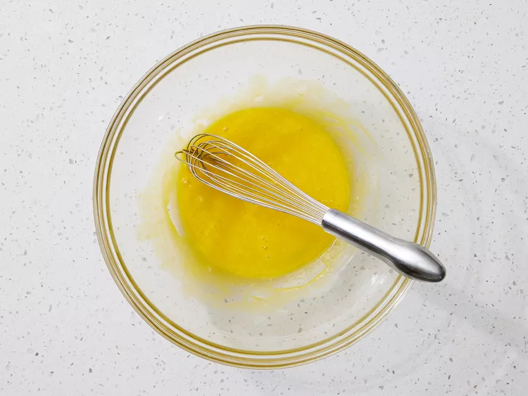

Ingredients
- 10 ounces diced pancetta
- 16 ounces spaghetti
- 4 large egg yolks
- 2 cups grated parmesan cheese
- 1 cup heavy cream
- 2 cups cooked chicken breast
- 1 tablespoon italian parsley
Directions
Gather all ingredients. Preheat oven to 325 degrees F (165 degrees C). Coat a 9x13-inch baking dish with nonstick cooking spray.
Cook pancetta in a medium skillet over medium-high heat until lightly browned and crisp, about 5 minutes. Set aside.
Boil spaghetti in lightly salted water for 5 minutes. Drain pasta and reserve 2 cups pasta water.
Meanwhile, add egg yolks to a large mixing bowl and whisk until smooth.
Gradually pour 1 1/2 cups hot pasta water over egg yolks, whisking vigorously, making sure to whisk constantly so eggs do not scramble.
Whisk in Parmesan cheese, then heavy cream.
Add cooked pasta, pancetta, and chicken to the sauce, toss to combine. Transfer pasta mixture to prepared dish.
Bake until hot and sauce has thickened, 20 minutes, stirring halfway through.
Remove from heat, stir and let stand for 2 to 3 minutes allowing sauce to continue to thicken. Additional pasta water can be added, as desired, for a saucier pasta.
Garnish with parsley and extra Parmesan cheese.